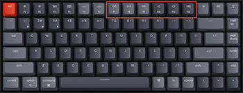

Project
Overview
We want to create the ultimate lightweight overlay for playing music
on Spotify.
The overlay will be bound to a hotkey that will bring up an
informative minimalist window in the upper left corner of your screen.
This window will have intuitive button-based controls that allow for
rapid song selection and effortless volume adjustment, among other
things—all without causing any disruption to your current focus.
Once installed, the program will launch as a background process on
windows startup and fully initialise when Spotify is open and playing.
Since the goal is to be as unobtrusive as possible, this will have
almost zero performance impact.
Music is one of the common pleasures we all share, one way or another;
almost everyone listens to music in some form. Today, Spotify alone
has 406 million users, with over 25% of Americans reporting that they
use Spotify monthly. That's a lot of songs being skipped, yet we can't
help feeling like the action is clunky and distracting. If I want more
choice over what track to play next, I have to stop what I'm doing,
open the application, and sift through my unorganised playlists until
I find something that tickles my fancy.
What if I had a convenient overlay that knew what I wanted to play
ahead of time, didn't involve alt-tabbing and gave me more control
than the original service, all without breaking focus on my workflow
or gameplay. That's what we want to achieve.
Aims
Plans and Progress
Roles
We have not defined specific roles in our group, being all new to the field of IT we felt it better to all remain the same hat to better our collective knowledge across every aspect of the project. While there were no defined roles, all group members held certain strengths, with task delegation being handled by assigning jobs to those had the most confidence in the given task. Working this way allowed better communication between group members, as well as the ability to learn from one another in area's that group members hadn't been exposed to before, it also fostered a healthy environment for discussing topics none of us were fluent in, brainstorming, bouncing idea around and learning together.
Scope and Limits
Tools and Technology
The software and tools that are required for the project is the tekore library, this would allow us to access the features that the spotify API has access to, meaning that the music library that spotify uses will give us access and this allows for asynchronous programming which is a Boolean parameter that could be used to check if the data from the spotify resources that is going to be used, this will in turn make it so that we assign a value of what the overlay will do and appear on the GUI such as when a song finishes to play the next song in the cue, to change to the play button to show that the song is playing. This will give authorisation for applications and users so that we can use the platform that spotify uses to implement the overlay application to spotify, this will allow users to use the application and help us with testing and developing the application. This has a senders function that allows a failed request meaning that after the user interacts with the overlay application in order to use a feature of the application sends that value to the spotify API to do that feature although this could fail cause the application is sending the value from a different website, the user that requested to the overlay application and resends that request to the application or to the spotify API until the request works so that it will be used to help us with the backend of the requests that don’t work to better manage them
Testing
We will be testing how the features of the overlay application will perform including how the application will appear and its functions, the first test that we are going to do will be seeing if the application will access the resources that the spotify API uses and this will allow us to change the environment that the file is in and to extract it, to show that we will be using the asynchronous programming so that we can see if the Boolean function will register the file that is going to be used or not and so that the rest of the features of the overlay application will use this function and the input of this is the songs that are used will be accessed from within the spotify API. The next test is that to check for the value of the time that the song will take and this will be using the Boolean function to realize the numerical value of the time when the song finishes then it will play the next song that is in cue. The next test will see if the play, skip and play back buttons are working meaning that the interaction with the file of the spotify API resources and the numerical value of the time for the song that are going to have the Boolean function and this will change the GUI according to the users interaction with the overlay application
Timeframe
Risks
Most of the risks for our overlay project are those surrounding the software required to build the application. As we are using multiple python associated libraries, there is a definite risk of these libraries not being able to fulfil the requirements that is needed to complete this project. There is also a risk of becoming obsolete due to constantly evolving hardware, in particular keyboards, as a lot of these products feature built-in keys for pause/play, skipping tracks and volume controls, rendering the need for additional keybinds moot. The overlay GUI itself to visibly see current track choice is also at risk of being made obsolete, given the general demographic of people that would be interested in such an overlay is gamers/heavy IT users, it is very commonplace now to have multiple displays, this coupled with in-built options on keyboards might see this project fall short of our anticipated need. (Keychron K2 Wireless Mechanical Keyboard (Version 2), 2022)
